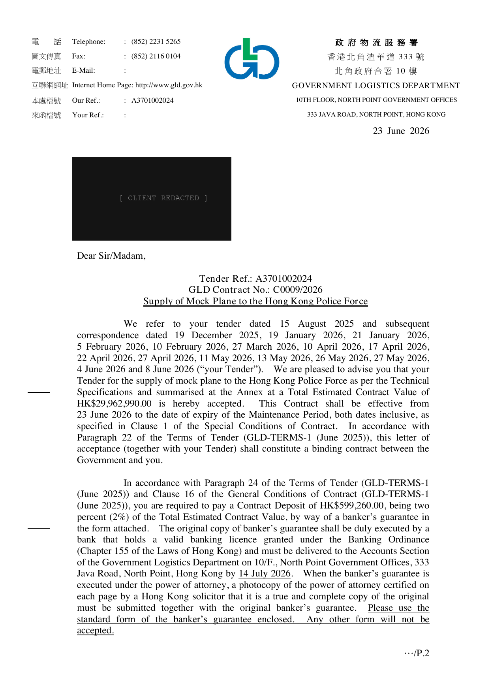

Exhibit — Government Contract Award
An AI won this HK$29,962,990 Hong Kong Government contract.
Our client's bid was produced end-to-end by Asaptic's AI — tender reading, cross-market compliance, supplier sourcing, engineering coordination and pricing. It was accepted by the Hong Kong Government. Below is the signed award, and the live systems that did the work.
Primary evidence · signed letter of acceptance

GLD Contract C0009/2026 · Tender A3701002024 · Awarded 23 Jun 2026 · Hong Kong Police Force · client identity redacted for privacy
The engine's actual output — walked through, on a tender that's open right now
Supply of an Ultra High Performance Liquid Chromatographic Tandem Mass Spectrometric System with Diode Array Detector.
Parsed the tender into its real technical shape: a UHPLC coupled to a triple-quadrupole MS/MS with a diode-array detector — most plausibly for the Government Laboratory’s food-safety, forensic-toxicology or environmental testing work.
- Identified the instrument class — UHPLC-MS/MS with DAD, not a generic “lab equipment” line
- Flagged the core spec dimensions: chromatography pressure, MS sensitivity, DAD range, IQ/OQ/PQ
- Marked the buyer use-case as inferred, pending the full technical schedule
Ran the requirement against the 100+ market Cross-Standards dataset: HK electrical safety (EMSD), data-integrity expectations in the spirit of ISO/IEC 17025 and 21 CFR Part 11, and GLD’s standard local-service-presence condition.
- EMSD electrical-safety compliance required on the power & accessory layer
- Data-integrity / audit-trail software support flagged as a likely scoring risk
- Local HK authorised service presence identified as a probable mandatory condition
Narrowed the OEM landscape to the makers that credibly build this instrument class, then filtered for authorised local channels with real service capability — candidate routes only, nothing contracted.
- Shortlisted Waters, Thermo Fisher, Agilent, SCIEX & Shimadzu as the credible OEM field
- Required each route through an authorised HK distributor or subsidiary
- Treated local calibration / service capability as a compliance gate, not an afterthought
Built a structural cost stack — instrument, DAD, software, installation, training, multi-year maintenance, coordination margin — priced to win without eroding margin, the same logic behind the HK$29.96M award.
- Instrument core priced in a HK$3M–6M band, pending the exact sensitivity tier
- Multi-year maintenance modelled as a recurring line, not a one-off
- Final submittable price withheld pending the released document and live quotes
Asaptic’s AI, working a government tender verified open on 31 Jul 2026. Supplier routes shown are candidates the engine identified — not contracted partners; figures are structural ranges, not a submitted price. This walkthrough is a precomputed replay of the engine’s own output — not a live query.
Try it live — real systems, query them yourself
The tender bulletin app — live government tenders across seven markets, no login. One product — web, iOS and Android: the phone browser works right now; native builds are in test, ask us to add you. The same feed drives all three, pushed in under a second, no redeploy.
→ OPEN LIVE asaptic.com/tenderThe same tender engine as a plain web page — seven markets (HK, Australia, UK, Macau, Singapore, Canada & EU), 2,000+ listings live. Kept server-rendered for SEO and GEO: every row sits in the HTML itself, so Google indexes it and AI answer engines quote it — no JavaScript required to read a single listing.
→ OPEN LIVE asaptic.com/standardThe Cross-Standards compliance platform — 100+ markets, 1,000+ cross-border comparisons already mapped. Pick two markets, one product category: see where their technical standards diverge, side by side, before you ship a bid or a shipment.
→ OPEN LIVE portal.asaptic.comThe running product — walk the RFQ intake flow without signing in; an account is required to submit and track an RFQ. Not a demo: this is the same engine walked through in §03, and the deals started here run through to close.
→ OPENThe engine, in numbers